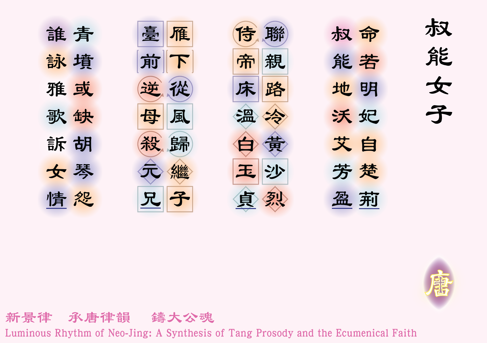

![[如果未顯示圖片，請確認 圖例_2-01.jpg 已放入同資料夾]](圖例_2-01.png)

命若明妃自楚荊 [1]* 明妃：王昭君的別稱。王昭君，原名王嬙，字昭君，本為漢元帝未寵宰之妃嬪，後被選為與匈奴和親的「宗室」。
** 楚荊：今湖北省一帶的地方，為王昭君之故鄉。，叔能地沃艾芳盈 [2]* 關於叔能 (Shunem)這個地方，可參考
https://jewishvirtuallibrary.org/shunem
** 艾：本意為一菊科植物，漢語中常用來比喻少女。。
聯親路冷黃沙烈 [3]聯親：和親的意思。，侍帝床溫白玉貞 [4]達味晚年體弱發寒，臣僕替他在民間找來了美女阿彼沙格，為他暖床。然而達味並未正式寵幸過她。見〈列王紀上：1:1-4〉。
雁下從風歸繼子 [5]* 雁：漢語中常用來借代書信。
** 從風：遵從風俗的意思。歸繼子：歸，嫁的意思。史書記載王昭君在老單于（匈奴王）呼韓邪駕崩後曾請求返歸，時任的漢成帝敕令其遵從匈奴的習俗，嫁給繼子，即復株絫若鞮單于。見《漢書·卷九十四下·匈奴傳第六十四下》。，臺前逆母殺元兄 [6]達味的第四子阿多尼雅曾向時任太后的巴特舍巴請求，讓撒羅滿王將阿彼沙格賜予他。巴特舍巴向撒羅滿王轉求，撒羅滿王拒絕，並把阿多尼雅殺掉。見〈列王紀上：2:13-25〉。，
青墳或缺胡琴怨 [7][10] 青墳：即青冢，相傳王昭君的墓長年青草長生，故曰青冢。在今內蒙古自治區呼和號特市。，誰詠雅歌訴女情 [8]* 女性神學學者，如台灣的林淑芬，認為〈雅歌〉是由女性所書寫的。亦有學者如Christopher W. Mitchell提出〈雅歌〉中的主角「叔拉米特」就是「叔能人阿彼沙格」。見 https://gospel.pct.org.tw/AssociatorMagazine.aspx?strTID=4&strISID=388&strMAGID=M2010071402289 及 https://drpdevries.com/2025/01/25/a-commentary/ ，瀏覽日期：2026年5月27日。
** 另外，這句犯了孤平之誤，第三字在格律要求中必須為平聲，或以第五字作平聲拗救，惟「雅歌」屬聖經書卷，不能易名，第五字的「訴」亦難以有其他平聲字意境相當，故此以意破律。
？
體裁：七言律詩（仄起首句入韻）
韻部：平水韻．八庚
創作日期：二零二六年五月二十四日